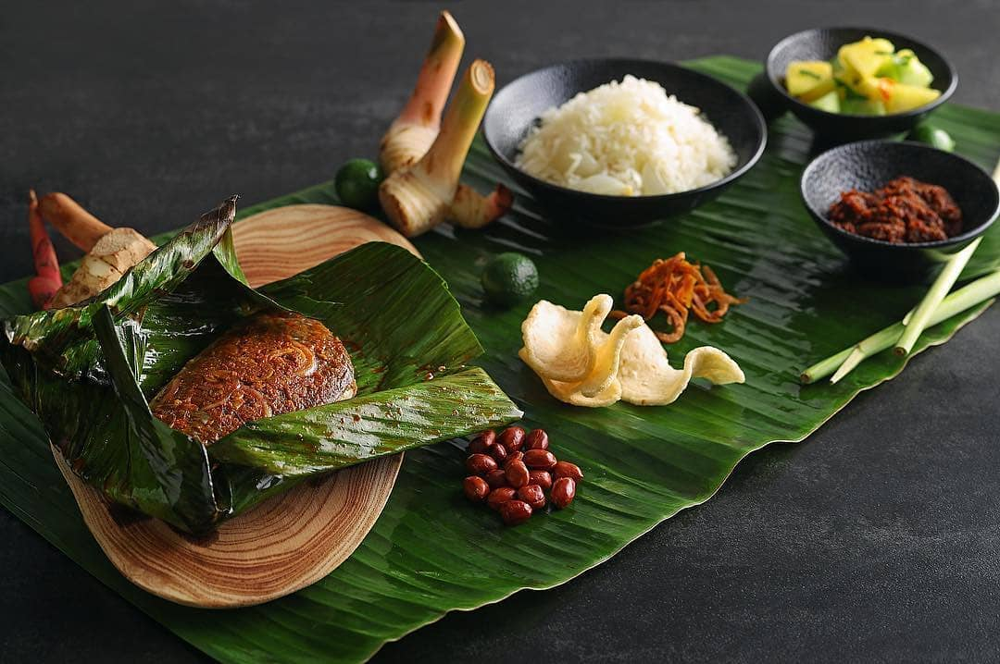
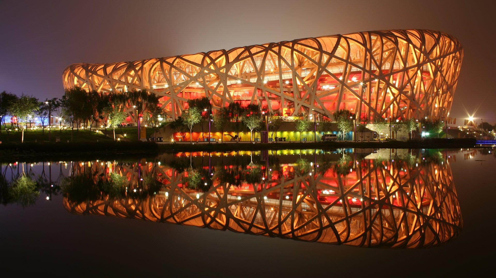

Beijing - China
Beijing - One of the oldest cities in the world
The city of Beijing has a long and rich history that dates back over 3,000 years. It became the capital of China since Yuan Dynasty.

Beijing - The world famous modern city
Beijing is one of the world's fastest rising cosmopolitan cities and a world's leading center for culture, diplomacy and politics, business and economy, education, language, and science and technology.

Beijing - The culture hub of China
Beijing has a unique collection of architecture, arts, cuisine, and other cultural facets because of its long history and deep culture roots.

Explore in Beijing:
Beijing Cuisines
Beijing cuisine is a cooking style in Beijing, also known as Mandarin cuisine. It has been influenced by culinary traditions from all over China.
Click here to explore more Beijing Tourist Attractions
Beijing, the heart of China, is always the first choice of travelers who are willing to know a time-honored and developed city of China. It has been the political, economic and cultural center of China for over 800 years from the Yuan Dynasty.
Click here to explore more 